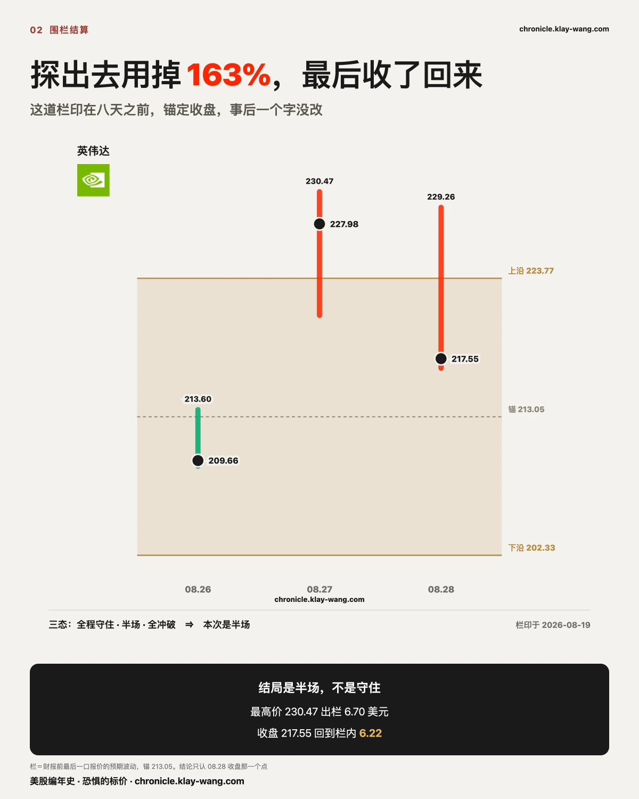
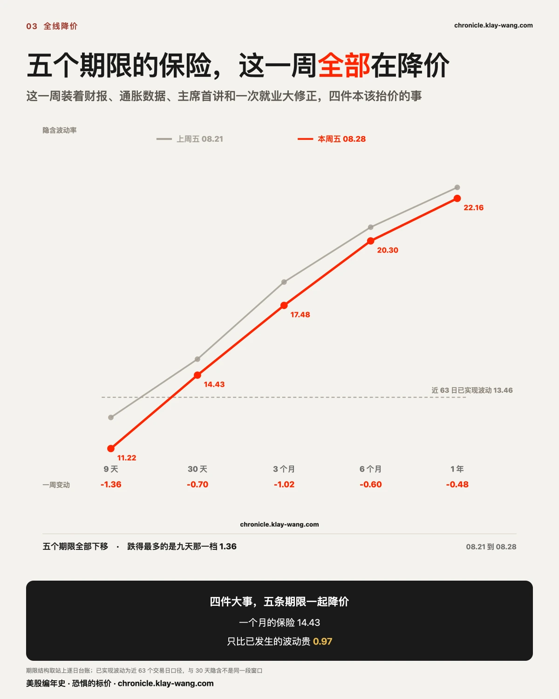
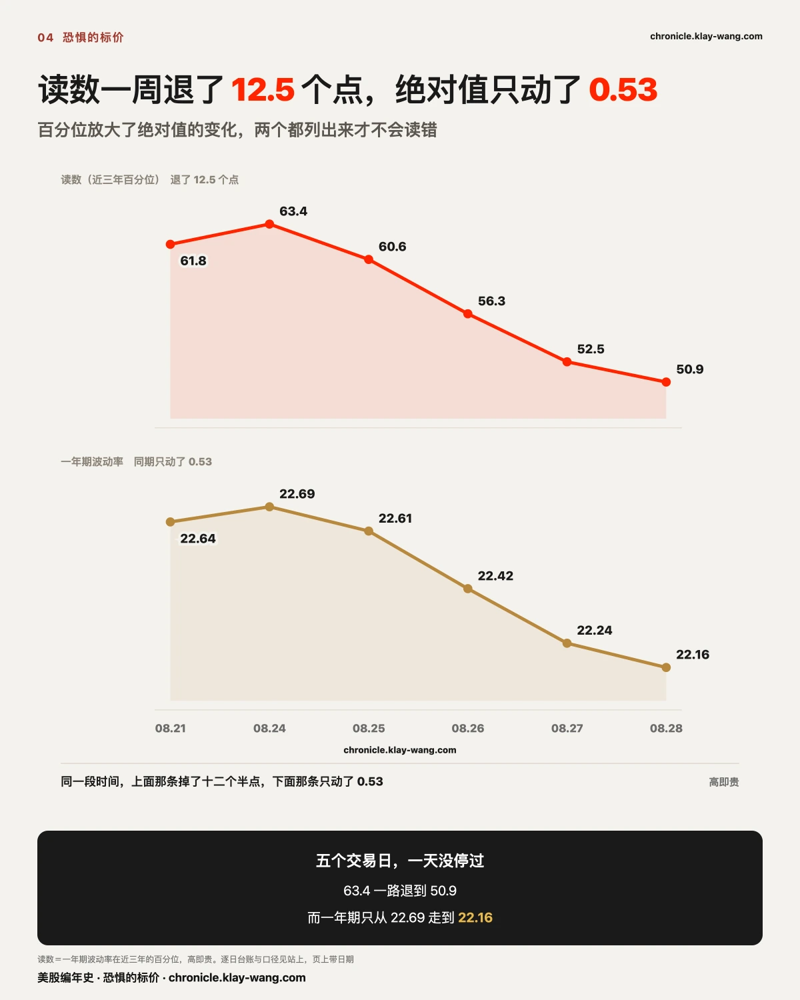
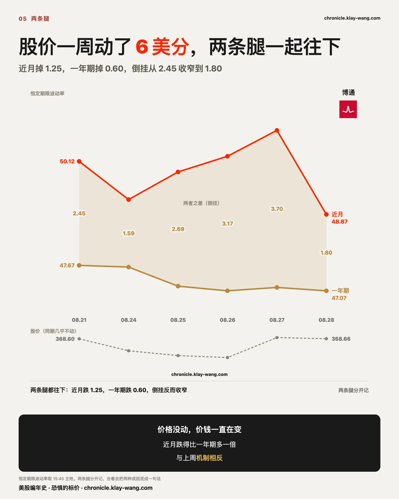
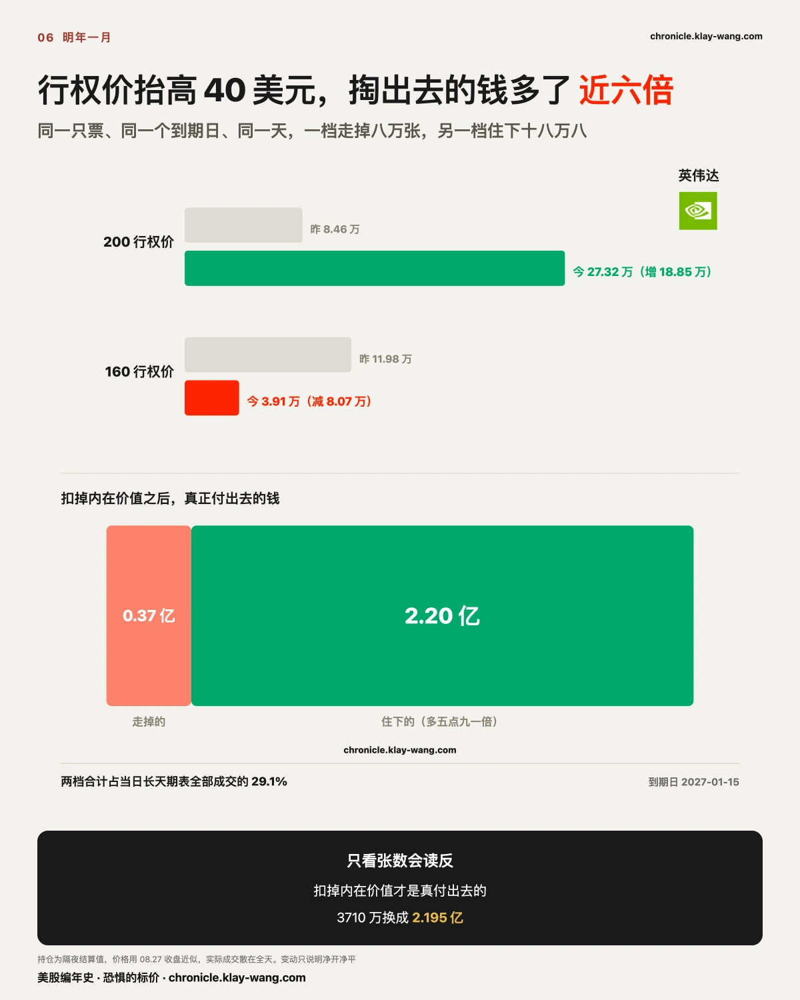
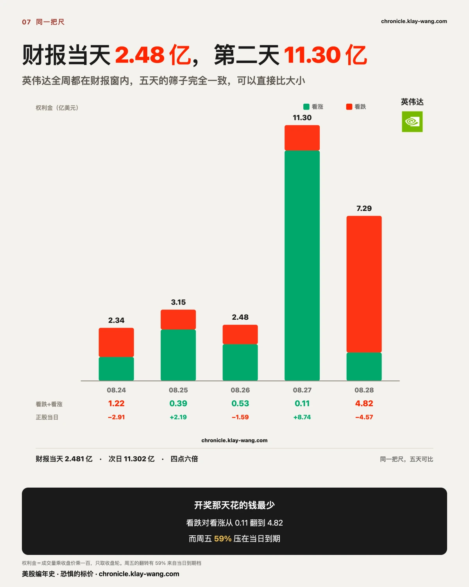
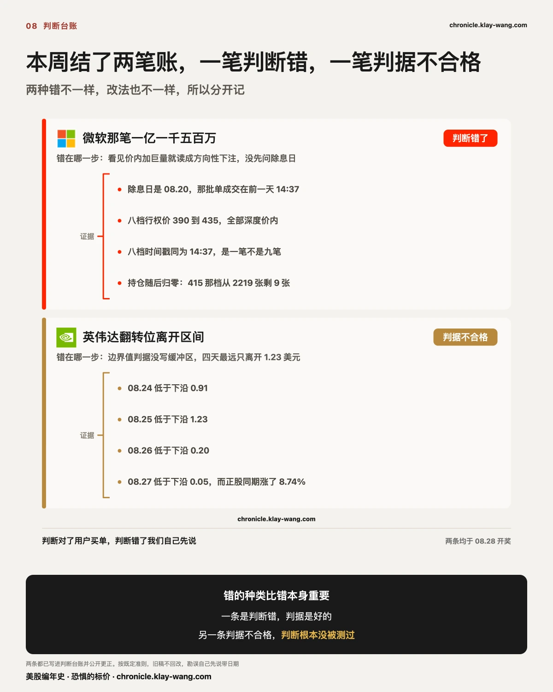
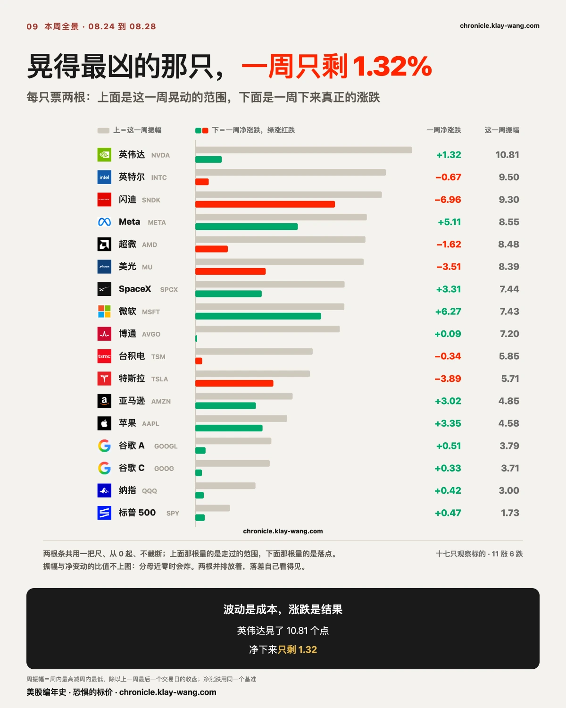
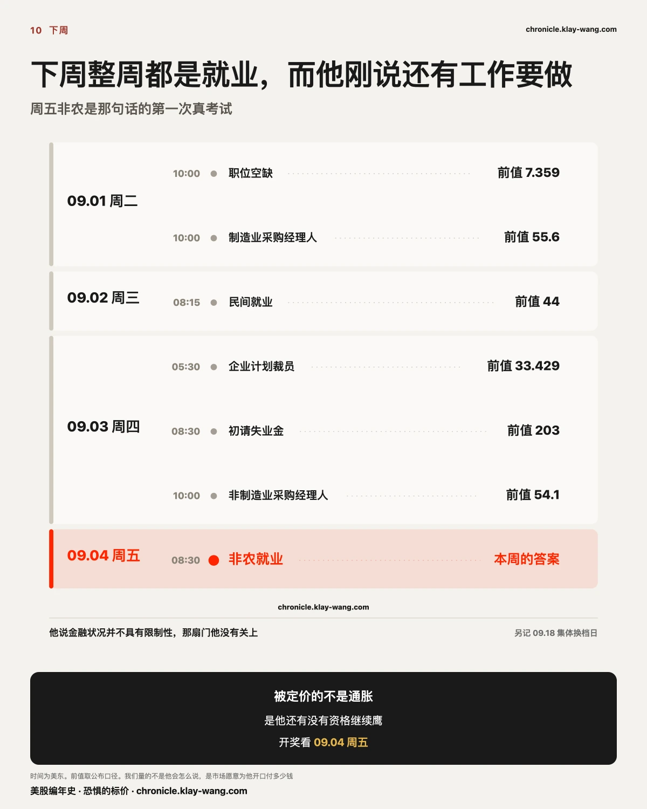

美股七姐妹财报纷纷引爆超预期波动？ChatGPT 时代首次！——8.24-8.28 本周回顾
三行干货
- 保险没有涨价，是因为量波动的那把尺子只量落点，量不到路。
高波动那十只实际走过 223.9 个百分点，净下来只有 −4.81，路是落点的 47 倍；
而已实现波动率只量收盘对收盘，隐含波动率又对着它定价。 - 特斯拉价格不动，是十亿美元的期权压出来的。 它没有财报，
却拿走全周第二多的权利金（10.02 亿，占 16.2%），钱全架在现价两侧的行权价上。 - 财报季七道围栏（盘面上叫预期波动幅度 EM）这一周结清最后一道。五道被冲破，而且是两上三下：
方向不固定，说明宽度给窄了。
〔本周结账〕财报季七道围栏这一周全部结清，五道被市场自己冲破
英伟达周五收 217.55。从七月二十三日印下第一道，到这一周结清最后一道，三十六天，
七大科技股的财报围栏全部有了结果。
这七道栏是市场真金白银下的注。它在盘面上有个名字：预期波动幅度，
英文 expected move，多数软件里写作 EM，也有直接叫隐含波动区间的。
算法不复杂：财报之前，覆盖财报夜那个到期档的期权会被重新定价，
把那一档平值看涨和平值看跌的报价合起来除以股价，就是市场认为这只票开奖后大概率会走多远。
那是报价：愿意卖出这个保护的人必须给一个价，价一旦成交，就是那一刻的共识。
不管你打算怎么做这场财报，这个数都是你的起点。 买单腿的，它决定你要付多少时间价值，
也决定股价得走多远你才回本；做价差的，它就是你两条腿之间那段距离的定价；
卖铁鹰、卖蝶式这类两边都收钱的结构，你收进来的权利金就是它报出来的，
而你的两个翅膀架在哪里，等于你在赌股价走不出这个区间。
所有这些结构，盈亏的那条边界线都是拿这个数画出来的。
所以这本账记的是这条边界线在这一个财报季准不准。
关键在于它可以被事前钉住。七道我们全部在开奖之前印在稿子里，锚定收盘，事后一字未改。
- 特斯拉：栏 ±5.0%，实际 跌 17.36%，出栏，超出 3.47 倍
- 微软：栏 ±6.17%，实际 涨 19.43%，出栏，超出 3.15 倍
- 亚马逊：栏 ±5.89%，实际 涨 17.37%，出栏，超出 2.95 倍
- 苹果：栏 ±3.35%，实际 跌 8.31%，出栏，超出 2.48 倍
- 谷歌：栏 ±5.2%，实际 跌 7.92%，出栏，超出 1.52 倍
- Meta：栏 ±6.98%，实际跌 6.26%，栏内
- 英伟达：栏 ±5.03%，收 217.55 对锚 213.05 为 涨 2.11%，半场
五道被干净冲破，一道干净守住，一道探出去又收了回来。
Meta 是从头到尾没出去，英伟达是出去过又回来，这是两种结局，不合并算一种。
看清楚这五道是怎么破的：两道向上破，三道向下破。
微软和亚马逊冲出上沿，特斯拉、苹果、谷歌跌穿下沿。
这一点决定了它是什么性质的失误。如果五次都朝同一个方向破，那是市场看错了方向，
调一调偏度就能修。它是两上三下，方向根本不固定。
剩下的解释只有一个：宽度给窄了。 还有一层：栏开得宽不宽，跟它准不准没有关系。 最宽的 Meta ±6.98% 守住了，
最窄的苹果 ±3.35% 被走出两倍半，看着像越宽越安全；但第二宽的微软 ±6.17%
被走出 3.15 倍，比最窄的那只还离谱。
这本账对你的用处就在这里。财报之前你在盘面上看到的那个隐含区间，
七次里有五次不够用，而且你没法靠押一个方向去修它。
它是市场给自己开的价，会被走穿。说清楚时间：这七道里有六道是七月结的，这一周结的只有英伟达那一道。
下面两节讲的才是这一周自己发生的事。

〔放到两年里看〕这一季是 ChatGPT 之后波动最大的一季，市场用两年建起来的定价框架退回去了
上面那七道是我们这一季自己印的账。把镜头拉远，这一季在更长的尺子上也站得住。
我们把七家的财报次日单日涨跌按季往回排，一直排到 ChatGPT 发布的那个月。
（这一段量的是财报次日收盘对收盘的单日幅度，和上面围栏那套锚定收盘、算到结算日的口径
不是一回事，两组数不能混着看。所以微软在这里是 15.51%，在围栏那本账里是 19.43%。）
2026 年这一季，七家的绝对涨跌均值 10.93%，是 ChatGPT 发布以来十五个季度里最高的一季。
排在它后面的是 2023 年头两季的 9.57% 和 9.42%，那时 AI 刚起来、市场还没有一套定价框架。
中间那两年，均值一直压在 3.71% 到 6.29% 之间，最低的是 2025 年二季度的 3.71%。
市场花了两年，把这七家的财报做成一件可预期的事。这一季一次退了回去。
退回去的是什么，可以说得更具体。过去两年市场对这七家的读法是一致的：AI 投入换未来增长，
投入越大越加分。 这一季这个读法失效了，而失效的方式是两头都失效：
微软和亚马逊按这个读法被大幅加分，特斯拉、苹果、谷歌按同一个读法被大幅扣分。
同一套框架同时给出两个方向的极端答案，说明市场手里已经没有一把统一的尺子。
这正是上面那本账的另一种讲法。七道栏两上三下、方向不固定，
根子是市场不知道该往哪边偏，只好把宽度定在中间。 于是宽度不够用。
还有一件事跟着变了。保险塌得比过去快。 英伟达财报次日近月一天塌 7.28 个点，
后面那一节会拆开讲。塌得快的另一面是开奖前那口报价被证明太便宜了：
七次里五次，实际走的比它卖的多。这一季买保险的人得到的赔付，
比卖保险的人收到的钱多，而这在过去两年是反过来的。
〔第七道〕英伟达那一道我们印得最早，也是唯一一道盘中和收盘给出不同答案的
08.19，财报前七天，这道栏就印在日更里，开盘前 21 分钟冻结：
覆盖财报的第一个到期档，预期波动 ±11.92 美元，占股价 5.42%；
而同一天财报前最后一档只有 2.65%。
之后每个交易日带宽都在台账里留了痕：5.42%、5.33%、5.25%、5.15%，
到 08.26 财报当天早上定格在 ±10.72 美元，5.03%。
七天里带宽几乎没动。市场对这场财报会有多大动静的估计，从头到尾没变过。
按那最后一口报价，栏在 202.33 到 223.77 之间，中点 213.05，正是前一天的收盘。开奖三天：08.26 全程栏内，最高 213.60，上半栏只用掉 5%；08.27 盘前一度冲到 227 附近；
08.28 窗口最高 230.47，用掉上半边栏的 163%，收 217.55，回到栏内 6.22 美元。
七道栏里，只有这一道，拿盘中最高那一刻判和拿收盘判会得到相反的答案。
带宽七天没动，这件事本身就是判断。这七天里信息一直在变：
八月十九到八月二十六，正股走了一段，同业交了卷，宏观日历也翻过去几页。
市场对这场财报会有多大动静的报价，一动没动。
它从一开始就把这个数定死，然后不再更新。
七道栏里五道不够用，根子多半就在这里。
这一道判半场，是规矩定死的结果。
Meta 七月底就教过这件事：它是前六家里唯一守住的一家，但它中途出去过。
07.30 我们印过它已经出栏，当时读数 −9.23%，栏是 ±6.98%。
到结算日它回到 −6.26%，栏内。
同一天的保险价，取哪个时点，可以得出互相矛盾但都真实的结论。
所以主序列锚收盘：它是唯一一个不需要我们挑选的点。挑时点，就是在挑结论。

〔另一头〕四件本该抬价的事撞在这一周，五个期限的保险一个没涨
围栏那一头是财报把价格打出区间，而这一头正好相反。
四件事，一件不少：英伟达财报（08.26 盘后）、个人消费支出物价（08.26）、
美联储主席任内第一次重大演讲（08.28）、以及一次把过去就业往下修 7.9 万的基准修正（08.28）。
按常理，这四件里任何一件都该让保险涨价。
（下面这五个期限量的是指数那一层的保险；个股那一层的近端与远端，放在后面英伟达那一节单说。）
- 9 天：12.58 走到 11.22，跌 1.36
- 30 天：15.13 走到 14.43，跌 0.70
- 3 个月：18.50 走到 17.48，跌 1.02
- 6 个月：20.90 走到 20.30，跌 0.60
- 1 年：22.64 走到 22.16，跌 0.48
跌得最多的是最近的九天那一档，跌得最少的是最远的一年那一档。
换一把完全不同的尺子还是同一个答案：三十天的隐含波动率现在是 14.43，
而市场过去六十三个交易日实际走出来的是 13.46，两者之间只剩 0.97 个点。
一年那一档的溢价还有 8.70。最近这一个月，几乎是按已经发生的价钱在卖。

温度计给的是同一个答案。一年期波动率在近三年的百分位：上周五 61.8，
然后 63.4、60.6、56.3、52.5、50.9。周一抬了一下，之后一天没停地退。
绝对值只从 22.69 走到 22.16，动了 0.53。
百分位会放大它底下的移动，两个都摆出来才不会读成出了大事。

〔两头连起来〕风险没有消失，它从指数那一层搬到了个股这一层
前面两块看上去互相打架：个股那头，七道栏五道被冲破，市场系统性低估了单只票会动多少；
指数这头，五个期限的保险一个没涨，一年期百分位五连退。
一边说意外比想象的大，一边说意外比想象的小。
它们不打架，它们是同一件事的两头。看这一周的横截面：标普 ETF 全周涨 0.47%，纳指 ETF 涨 0.42%，两个指数基本原地不动。
但同一周，我们表里最强的微软涨 6.27%、最弱的闪迪跌 6.96%，两端相差 13.23 个百分点。
指数没动，是因为里面的票互相抵消掉了。
微软冲出上沿 19.43%，特斯拉跌穿下沿 17.36%，装进同一个指数里，两笔几乎对冲干净。
所以指数那一层的保险可以一路降价，而个股那一层的栏一道接一道被冲破，
这两句话同时成立，而且互为因果。
指数表面一动没动，而它内部两端相差 13.23 个百分点。
这层抵消是一个掩体：站在它后面看，这一周风平浪静；
掀开它，是七道栏里五道被冲破。
但话要说到底：个股那一层的保险，这一周也在降价。
英伟达一年期从 40.48 走到 39.94，博通一年期从 47.67 走到 47.07，两只都是往下。
个股保险没有涨价。 准确的说法是：这一周个股实际走出来的幅度变大了（七道栏破了五道），
而指数和个股两层的远期保险，没有任何一层为此涨过价。
风险没有变少，也没有被重新定价。它换了个地方待着。
买指数保险的人这一周确实没什么可担心的，而买单只票的人面对的，
是一个七次里五次不够用的区间。一个人手里如果只有两三只票，
指数波动率退到 50.9 这件事对他毫无意义，因为他没站在那个掩体后面。
涨跌榜因此是一把很钝的尺子：它记的是抵消之后剩下的那个数。 再往前推一步：往后决定你账户波动的，不会是指数波动率那条线，
是你手里那几只票各自的栏够不够宽。
〔近端和远端〕财报次日英伟达近月一天塌 7.28 个点，一年期只动 0.66
上面三把尺子量的都是指数那一层。同一件事在单只票上照样成立，
而且单只票能把近端和远端分开摆给你看。先看一只这一周没有财报的。博通这一周股价从 368.60 走到 368.66，一周只动了 6 美分。
（价格与下面两条腿同取恒定期限表 15:45 那一枪，同源同时点，不与官方收盘混用；
两端都取 08.21 与 08.28，不跨日期。）
它的两条腿这一周是这样的：近月从 50.12 掉到 48.87，跌 1.25；一年期从 47.67 掉到 47.07，跌 0.60。
倒挂从 2.45 收窄到 1.80。
两条腿都在往下，而近月跌得比一年期还多一倍。
上周那次是一年期往下掉把倒挂拉宽，这周是近月自己塌得更快把倒挂压回去。
同一个读数，两种成因，不合成一句话写。
一年期这条腿逐日：47.67、47.63、47.18、47.07、47.15、47.07。
六个交易日被重新标了六次，五次往下。股价没动，价钱一直在变。

再看一只有财报的。有人会说：财报影响的是最近那几档到期，你们量一年期，量错地方了。
这一周英伟达自己就把两层分开摆出来了。
- 近月（三十天）：08.25 是 40.51，财报当天 08.26 抬到 41.01，财报次日 08.27 塌到 33.73，
08.28 收 33.06。一天掉 7.28 个点，塌掉 17.8%。 - 一年期：40.48、40.39、39.73、39.94。同一天只动了 0.66。
这叫隐含波动率塌缩，一点不神秘，它正好把两件常被混在一起的事分开了：
买末日期权的人赚不赚钱，是方向的事。 周四英伟达涨 8.74%，
提前买进的人哪怕碰上近月保险塌 7.28 个点，方向赚的也盖过了波动率亏的。他赚了。
但保险贵不贵，是波动率的事。 近月那 7.28 个点塌下去，就是保险变便宜了。
买方赚钱和保险降价，是同一件事的两面，不矛盾。
我们量的从来是后者：市场给这个风险开的价。
至于近端还是远端，这一节两头都给了：近月一天塌 7.28，一年期只动 0.66。
〔开奖之后〕大事件的定价不在事件当天完成，钱要等第二天才进场
三张互不相干的表，长出了同一个形状。
同一把尺下英伟达自己的短端期权权利金，五天是这样：
- 周一 08.24：2.346 亿，看跌对看涨 1.22，正股跌 2.91%
- 周二 08.25：3.148 亿，0.39，正股涨 2.19%
- 周三 08.26 财报当日：2.481 亿，0.53，正股跌 1.59%
- 周四 08.27 财报次日：11.302 亿，0.11，正股涨 8.74%
- 周五 08.28：7.291 亿，4.82，正股跌 4.57%
开奖那天花的钱，只有第二天的四分之一多一点。
尺子要先交代清楚，否则这张表一文不值。管线的筛选闸是逐票判定的：
宏观日全部十二只票一起放宽，财报窗只放宽窗内那几只，放宽是交换，
放低到期日门槛的同时金额门槛乘二。所以全表合计五天之间没法比大小，
能比的只有英伟达这一列，因为它五天都在财报窗里。
长天期那张表上，英伟达 2027 年 1 月 15 日到期这一个日期吃掉全表成交的 42.6%，
其中两档吃掉这个到期日的 68.2%：200 行权价新增 18.85 万张，160 行权价净减 8.07 万张。
扣掉内在价值只算时间价值，走掉的那批释放 3710 万，住下的这批押上 2.195 亿，
净多押 1.823 亿，是走掉那批的五点九一倍。
持仓变动只说明净开仓还是净平仓，说不出谁在买谁在卖；
同一个账户挪仓也证明不了，能证明的只有这个形状。翻转位是衡量定价重心的读数，周一到周四是 199.09、198.77、199.80、199.95，
正股周四涨了 8.74% 而它挪了不到一美元，真正动是在周五盘前，一步跳到 205.96。
同样的形状不只属于英伟达。 赛富时同为周三盘后交卷，周三收盘几乎没动，周四涨 22.58%。
周四盘后交卷的 Marvell，周四只跌 1.49%，周五跌 10.28%，六点九倍。
这条判据是周五开盘之前写下的。


〔对账〕本周结了两笔账，一笔判断错，一笔判据不合格
微软那笔一亿一千五百万是股息套利。 除息日八月二十日，
那批单成交在前一天下午两点三十七分；八档行权价 390 到 435 全部深度价内；
八档时间戳同为两点三十七分；持仓随后归零。
错在看见深度价内加巨量加同一到期日就读成方向性下注，没先问除息日在哪一天。
英伟达翻转位那条，错在判据。 原判据写的是离开 [200,210] 的首日即开奖。
按字面周一就该开奖，但四天里最远只离开 1.23 美元，周四那天只差 0.05。
那是四舍五入的幅度。 重立后的判据带缓冲也带持续期：
连续两个交易日落在 [198,212] 之外才算离开。
两种错不一样，改法也不一样。上一条是判断错、判据是好的；这一条判据不合格、判断根本没被测过。

〔生意〕SaaS 的定价权正从按人头滑向按结果，倍数会先于业绩改
关于 AI 会不会杀死 SaaS，这个问法本身就错了。 SaaS 卖的从来是别人不愿意自己维护的流程、权限和数据，
这三样东西模型再强也得先拿到手才能动。
真正的风险是定价权从按人头收费滑向按结果收费：
席位不再增长的那天，收入可能还在涨，但涨的方式变了，估值给的倍数也就该跟着变。
赛富时这周的答案是把模型请进自己的数据里，
这是目前看得见的最合理的一种下注。以上这段周四那期已经印过一次，一个字没改。收盘之后市场给了一个大得多的答案。赛富时周三盘后交卷、周三收 205.62 几乎没动，
周四收 252.05，涨 22.58%，跳空 11.88% 加白天段 9.56%，开盘价就是当天最低，
成交量 3952 万是前一天 592 万的 6.7 倍。周五再涨 1.56%，两天累计 24.50%。
同一篇报道里写着，它本季营收增速 11%、环比降 2 个百分点、有机增长只有 6.4%。
六个点多的有机增长换来二十四个点的股价。动的是给数字的那个倍数。 公司自己给的两个数正好对着上面那两件事。数据有没有搬家：本季摄入 104 万亿条记录，
其中 82 万亿条走的是零拷贝，同比增 731%，零拷贝就是数据不动模型过来。
按什么收钱：代理工作单元本季 32 亿个，环比增 97%，这个单位算的是干了多少活。
这里我们和一个流行说法不一样。 常见的读法是往后市场取决于企业盈利兑现能力。赛富时这一周正好是个反例：六个点多的有机增长，买到了二十四个点的股价。
兑现当然要看，但这一周定价的是另一层。定价的是收费方式换挡：
从按人头收钱换成按结果收钱，市场先把倍数改了，业绩还在后面。 赛富时不在我们那十七只表内，价格为单独自取的日线，无期权数据。
〔本周真正动的钱〕特斯拉价格不动，是十亿美元期权压出来的
把这一周的短打表按票加总，看到的和头条不一样。全周 A、B 级合计 61.72 亿美元权利金。英伟达 26.57 亿占 43%，这符合直觉。
第二名是特斯拉，10.02 亿，占 16.2%：而它这一周没有财报。
方向更值得看。全表只有特斯拉一只，看跌的钱多过看涨（10.02 亿里看跌 5.10、看涨 4.92）。
其余每一只都是看涨占优：Meta 的看跌只有看涨的 0.29，苹果 0.21，美光 0.41。
特斯拉这一周的股价一步没走出去：348.95、350.25、345.82、354.81、348.75，
全周净跌 3.89%，来回都在 345 到 355 这条带子里。那 10 亿压在哪里？几乎全部在 350、352.5、355 这三档，当日或次日到期。
周五最大的三笔全是当日到期的看跌，行权价 352.5、355、350。
这个形状说不出方向。 短到期合约的持仓量是隔夜结算值，
成交对持仓的倍数在到期日天然会冲高，而成交数据本身分不出买卖。
这个形状能说：十亿美元的短期期权，行权价架在现价两侧，
而价格整周没有离开这两排行权价之间。
价格不动，不等于没有力量。 卖出这些期权的人要对冲，
价格往上碰 355 就得卖、往下碰 350 就得买。这条带子是被交易压出来的。特斯拉这一周走的是全表最窄的一段路，
同时是第二贵的一段路。
这件事有一个到期日。九月十八日是集体换档日，
所有押在那一天到期的仓位会一次性作废。约束价格的那批合约到期之后，
这条带子就没有东西撑着了。 这是一条可以拿去验的判断：
若换档之后特斯拉仍在 345 到 355 之间，说明带子来自基本面；
若当周走出去，说明这一周的平静是仓位撑出来的。
〔保险为什么没涨价〕因为量波动的那把尺子只量落点，量不到路
这一周有一件事一直没解释：四件大事撞在一起，五个期限的保险一个没涨。原因在尺子上。我们那张三十五只的跳空表把每天拆成两段：跳空段（昨收到今开，隔夜给的）
和白天段（今开到今收，盘中走的）。这一周两组走出了相反的形状。
期权那十七只：跳空段合计 +9.83 个百分点，白天段 −1.22。涨是夜里给的。
高波动那十只：跳空段 −18.35，白天段 +13.54。跌是夜里给的，白天在买回来。
把两段的绝对值加起来。高波动那十只这一周实际走过 223.9 个百分点，
而净下来只有 −4.81。路是落点的 47 倍。 期权那十七只是 23 倍。
但已实现波动率是拿收盘价对收盘价算的，它只量落点，量不到路。
隐含波动率又是对着已实现波动率定价的。所以这一周真实发生的波动，
有一大半在定价那一层根本没有被登记。
这一周的保险之所以没涨价，是尺子把一天的两段抵消掉了。
Reddit 这一周净涨 0.11 个百分点，实际走过 17.69 个点，161 倍；
博通净涨 0.16，走过 11.32，71 倍。这些路上的每一段都有人真金白银承担了，
而没有任何一份保险为它们收过钱。
这一周不平静。 波动被记账方式吃掉了。
单只票上看得更直白。英伟达这一周的振幅是 10.81%，全场最大，净下来只剩 1.32%，
它周四涨 8.74%、周五跌 4.57%，一来一回基本回到原地。十七只里涨 11 跌 6，
最强的微软涨 6.27%、最弱的闪迪跌 6.96%。涨跌榜记的是落点，你付的钱是路。

〔这对盯不盯盘的人不一样〕跌发生在你睡觉的时候，涨要你醒着
上面那个 47 倍，落到具体的票上是这样的：这一周涨的那几只，涨幅几乎全在白天：微策略跳空 −3.07、白天 +10.48，白天占七成七；
Palantir 跳空 −2.06、白天 +5.72，占七成四；Carvana 跳空 +1.55、白天 +4.36，占七成四。
跌的那几只，跌幅几乎全在夜里：MARA 跳空 −4.20、白天只有 −0.45，白天占一成；
Coinbase 跳空 −3.63、白天 −0.11，占百分之三；Robinhood 跳空 −2.38、白天 −0.73，占两成三。
加密相关的三只恰好分居两边：微策略白天被买上去 10.48，
而 MARA 和 Coinbase 是夜里被打下来的，白天几乎没人接着卖。
这是一个分歧市场，而分歧被拆进了两个不同的时段。
夜里流动性薄、下单的是少数人；白天是全市场。这一周高波动那一组，
少数人在往下卖，多数人在往上买，两边谁也没说服谁，最后收盘价看上去什么都没发生。
这件事对你很直接：如果你只看收盘价，你会以为这一组在慢慢跌。
实际是夜里被打下去、白天一直有人在买。你看到的那个慢慢跌，是两股力量相减之后的残值。 唯一的例外是 IonQ：跳空 −2.50、白天 −10.39，两段同向往下，全周跌 12.89 个百分点。
这一组里只有它，是夜里和白天都在卖的。
〔下周〕下周定价的是他还有没有资格继续鹰
美联储主席周五上午在杰克逊霍尔说了三句话：通胀没有出现有意义的放缓；
必须确信它在朝目标走且够快，否则央行还有工作要做；
目前金融状况并不具有限制性，而利率是履行职责的主要工具。
第三句最鹰。它的意思是收紧这扇门他没有关上。
下周整整五个交易日，摆出来的全是就业。
- 周二 09.01 美东 10:00：职位空缺，前值 7.359；同一时刻还有制造业采购经理人，前值 55.6
- 周三 09.02 美东 08:15：民间就业，前值 44
- 周四 09.03 美东 05:30：企业计划裁员，前值 33.429；08:30 初请失业金，前值 203；10:00 非制造业采购经理人，前值 54.1
- 周五 09.04 美东 08:30：非农就业
下周要被定价的是他还有没有资格继续鹰。
理由周五就露出来了。和他讲话同一分钟落地的还有一个数：
非农就业基准修正初值负 7.9 万，而预期是正 18.3 万。
这个数说的是过去这段时间的就业比原先记的要弱。
跟前值负 86.2 万比是大幅改善，跟预期比是大幅落空，两个方向同时成立。
他说金融状况不具有限制性；如果下周五的非农也偏弱，那句判断本身就要被重新掂量。
我们量得到的是市场愿意为他开口那一刻付多少钱。
这一周的例子已经摆在这里：押注周五到期的权利金 8.853 亿，而一年期保险从 63.4 退到 50.9。
另记一件下周之后的事：09.18 是集体换档日，那一天到期的持仓会大规模移仓，
届时所有跨到期日的比较都要重新对尺。

这对你手里的票意味着什么
不给操作建议，只把这一周的价格换算成你能自己判断的东西。
手里有英伟达的：这一周它净涨 1.32%，而市场为它花的钱有四分之三是在涨完之后花的。
你要判断的是：愿不愿意在一个已经涨完 8.74% 的位置上，
和上周四那批人付一样的价钱。他们买的是明年一月。
手里有存储两只的：闪迪跌 6.96%、美光跌 3.51%，是本周最弱的两只，
而这个方向在财报公布之前就定了。这说明它们跌的原因和这场财报无关，
所以英伟达的好消息不构成它们反弹的理由。要找的是它们自己的日程。
手里有微软的：它这一周涨 6.27%，全表最强。但要知道八月十九日那笔一亿多的价内看涨与看涨看跌无关，
是冲着 0.91 美元股息去的。如果你当时把它读成了有人在赌微软大涨，现在可以把这条从理由里划掉。
什么都没拿在等进场点的：这一周提供了一个可复用的观察，
就是大事件的定价不在事件当天完成。如果你习惯在财报前布置，这一周的数说明，
财报后第一个完整交易日的成交才是最密的。这是一个样本的观察，还不够成规律。
这篇适合转给财报前算过隐含区间的人
转给在财报前看过那个隐含波动区间、并且拿它当边界的人。七道栏结下来，
五次不够用，最离谱那道超出 3.47 倍。那个区间是市场给自己开的价，会被走穿。转给觉得保险开得越贵越准的人。最宽的 Meta ±6.98% 守住了，
但第二宽的微软 ±6.17% 被走出 3.15 倍，比最窄的苹果还离谱。
转给这一周被四条大新闻刷屏、以为市场要出事的人。四件事撞在一周，
五个期限的保险一个没涨，温度计连退五天。新闻的音量和风险的价钱，这一周是反的。
这一周值得带走的三句话
- 这一周真实发生的波动，有一大半在定价那一层根本没有被登记。
高波动十只走过 223.9 个点、净下来 −4.81，路是落点的 47 倍；
而保险是按落点定价的。你承担的是路，市场收你的是落点的钱。 - 价格不动不等于没有力量。 特斯拉整周钉在 345 到 355，
是因为十亿美元的短期期权架在这条带子两侧，卖方对冲把它压住了。
九月十八日换档之后，撑着这条带子的东西就没了。 - 只看收盘价，你会看不见这一周一半的事。 高波动那一组，
跌发生在夜里、涨发生在白天，两边相减之后收盘价看上去什么都没发生。
恐惧的标价：一周退了十二个半点，而绝对值只动了 0.53
恐惧的标价指数（Fear-Price Index）· 2026-08-28 · 读数 51/100：一年期波动率 VIX1Y 为 22.16，
处于近三年第 51 百分位，高即贵。逐日台账与口径 → chronicle.klay-wang.com · 转载注明：恐惧的标价指数 · Market Chronicle
这一周它是这样走的：上周五 61.8，然后 63.4、60.6、56.3、52.5、50.9。
周一抬了一下，之后五个交易日一天没停过。
但绝对值只从 22.69 走到 22.16，动了 0.53。 两个都列出来是有必要的：
百分位会放大绝对值的移动，只说读数退了十二个半点，读者会以为发生了很大的事。
期权异动与逐票数据 → chronicle.klay-wang.com/options
温度计读数与两个台账 → chronicle.klay-wang.com 这两页每个交易日收盘后自动更新，页上带日期，改不了也补不回去。
本站不提供投资建议，不预测方向，不做择时。